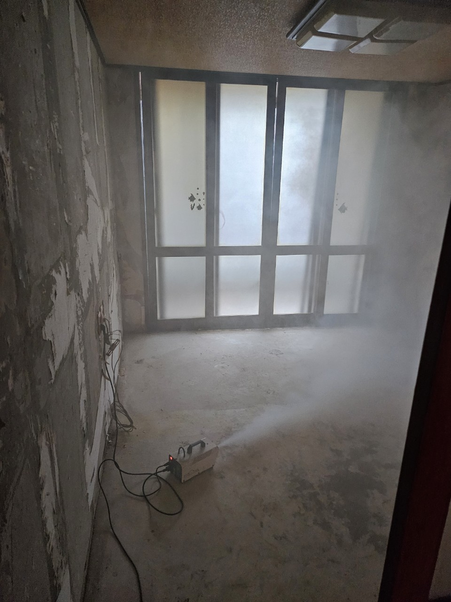

됩니다. 토평동은 수택3동 관할 법정동입니다. 작업장인지 주택인지만 함께 알려 주세요.
수택3동 · 토평동·한강
수택3동·토평동
수택3동·토평동
쓰레기집청소 · 유품 상담
수택3동은 구리시에서 면적이 가장 넓은 행정동이며 법정동 토평동이 포함됩니다. 한강 방향 주택, 작업장, 창고가 섞여 있어 한 주소라도 주거인지 작업장인지 먼저 가릅니다. 구리 올바른정리는 수택3동 쓰레기집청소를 장기 방치 주택과 집기 반출로 나누고, 유품이 있는 안채는 별도 분류로 진행합니다.
SERVICE
구리시 수택3동에서 맡기는 작업
수택3동은 빈집 매매 전 공실과 작업장 잔여 집기 문의가 많습니다.
유품정리
토평 주택 유품 분류
안채에 유품, 바깥에 공구가 있는 집이 있습니다. 공구는 폐기 전 가족 확인이 필요합니다. 한강 가까운 집은 습기 때문에 종이 유품을 먼저 건져 말릴 곳을 만듭니다.
쓰레기집청소
토평 빈집·작업장 상차
파렛트, 선반, 고철이 생활쓰레기와 섞여 있으면 품목을 나눕니다. 진입로가 넓은 편이라 본차를 붙이기 쉬운 현장이 많지만, 내부 동선이 자재에 막힌 곳도 있습니다.
PRICE
수택3동 비용이 달라지는 지점
수택3동은 주거 유품과 작업장 집기를 한 견적으로 섞지 않습니다.
* 부가세 별도 · 시작가이며 현장 확인 후 확정
유품정리
45만원 부터~
주택 유품 45만원부터, 바깥채·창고는 공간 추가입니다.
고독사 특수청소
80만원 부터~
습기·곰팡이 오염 방은 80만원부터 특수청소입니다.
쓰레기집·일반폐기물
30만원 부터~
작업장 집기는 30만원 가정 반출과 별도 품목으로 안내합니다.
GUIDE
토평동 쓰레기집청소는 가정 폐기물과 어떻게 다른가요?
생활 적치와 작업장 자재는 처리 경로가 달라 상담에서 먼저 가릅니다.
수택3동에서 쓰레기집청소를 찾는 대표 상황은?
토평동 빈집을 매매·임대하기 전, 수년 쌓인 생활폐기물을 빼야 하는 경우입니다. 한강 가까운 집은 장판이 썩고 냄새가 배어 반출만으로 부족할 수 있습니다. 그때는 특수청소를 이어서 안내합니다.
토평 유품정리는 공구를 어떻게 하나요?
작업장과 주택이 한 대지인 현장이 있습니다. 공구·자재는 유품이 아닐 수 있어 가족 확인 후 폐업·산업 성 폐기물 여부를 나눕니다. 안채 옷·사진·서류만 유품정리 범위로 두는 경우가 많습니다.
수택3동은 트럭 진입이 쉬운가요?
수택1·2동 골목보다 넓은 길이 많습니다. 다만 단지 안 막다른 길, 연약 지반, 작업장 게이트 높이는 확인이 필요합니다. 게이트 사진 한 장이 시간을 줄입니다.
공장 폐업과 주택 쓰레기집을 하루에 하나요?
같은 대지이고 양이 맞으면 가능합니다. 품목이 완전히 다르면 차량을 나누는 편이 비용이 덜 나오는 경우도 있습니다. 상담 때 두 공간을 사진으로 구분해 주세요.
수택3동 비용의 기준점은?
주거 유품 45만원, 일반 생활 반출 30만원, 오염 80만원입니다. 작업장 집기는 목록을 보고 따로 안내합니다.
PROCESS
수택3동 작업 순서
수택3동은 주거 구역과 작업 구역을 테이프부터 나눕니다.
STEP 01
구역 분리안채 유품과 바깥 집기 동선이 섞이지 않게 표시합니다.
STEP 02
습기 유품 우선종이·사진류를 먼저 건져 손상과 오분류를 줄입니다.
STEP 03
본차 상차게이트·진입이 되면 대형 품목부터 실어 내부를 엽니다.



FAQ
수택3동에서 자주 묻는 질문
검색·AI 답변에 쓰일 수 있도록 이 지역 기준으로 짧게 정리했습니다.
적치를 빼면 줄지만, 장판·벽지에 배면 특수청소가 필요합니다. 현장 보고 말씀드립니다.
생활 적치는 30만원부터입니다. 자재·집기가 섞이면 품목 안내 후 조정합니다.
가능합니다. 주택 유품과 별도 일정으로도 잡을 수 있습니다.